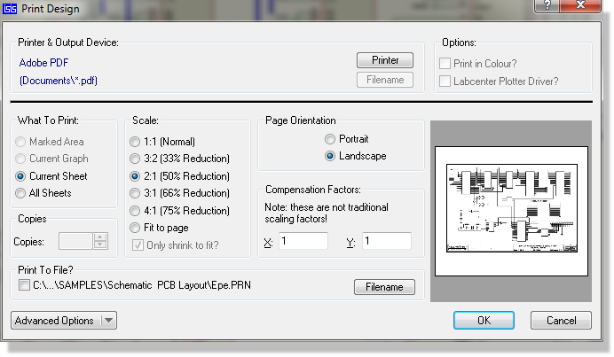
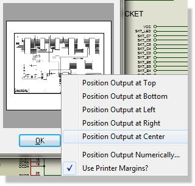
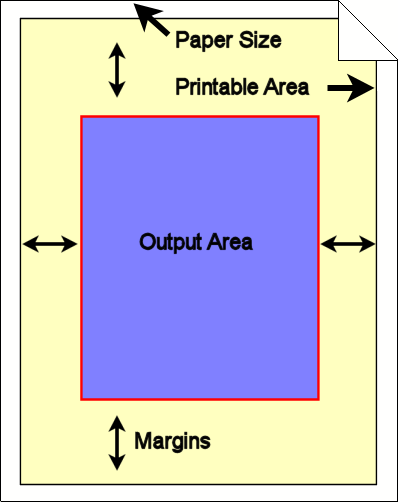

Output through standard Windows device drivers is performed using the Print command on the File menu whilst the device to print to may be selected using the Printer Setup command. Context sensitive help is available on all fields within these dialogue forms.
You can specify the printer device in one of two ways :
The Print Preview appears on the far right of the Print dialogue form and displays the position and size of the schematic relative to the specified paper size. It will ‘live update’ as you configure the dialogue (scaling,colour,etc..) to your requirements.

The Print Dialogue Form with the preview area on the right hand side
You can adjust the position of the printed schematic area by left depressing the mouse on the print preview and dragging to the desired position. Alternatively, you can choose a preconfigured position by right clicking the mouse on the preview pane and selecting the desired position from the context menu.

The context menu for positioning can be launched by right clicking on the preview area
Print Preview is disabled when ‘All Sheets’ is selected from the ‘What to Print’ section of the dialogue as it is not possible to show a preview of all sheets simultaneously. In this case printer output will be centered on the printable area.
When not printing all sheets you can manually configure the position of the output within the printeable area. Right click on the Print Preview and select Position Output Numerically and enter the margins that you want between the edge of the printeable area and the edge of the output area. This is, in effect, an absolute method of positioning the output area within the printable area. In general, however, we would anticipate most users to position the output area via the mouse drag method detailed above.The graphical illustration below depicts the use of margins.

A graphical illustration of Printer Margins
If you turn off the option to Use Printer Margins on the context menu the margins you specify will be from the edge of the paper itself. In most cases this is not recommended as, depending on your printer driver, you are likely to lose part of your schematic if you position it absolutely at the edge of the paper (outside of the printable area).
In addition to a number of standard scaling options you can select Fit to Page.
In the case where the output area is larger than the printable area both dimensions are examined and both X and Y dimensions of the output area are shrunk according to the dimension with the largest offset (thus ensuring that the entire output area is within the printable area).
In the case where the output area is smaller than the printable area both the X and Y dimensions of the output area are expanded according to the dimension with the smallest offset (again ensuring that the resulting output area is entirely contained within the printable area). Note that this option is only available if you uncheck the checkbox for Only Shrink to Fit.
The Printer Information option will dump a log of your printer details and capabilities. This is primarily for support purposes. Whilst our experience of printing support issues is that they are almost invariably the result of a defect in the printer driver we can make a better determination of the problem with the information detailed via this command.